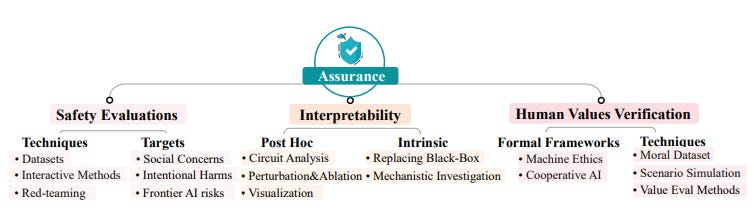

Part 3 of Navigating the Landscape of AI Alignment
Navigating the Landscape of AI Alignment, Part 3
A bird’s eye view of the field of AI Alignment, its components and techniques
Welcome to Part 3 of the blog post series “Navigating the AI Alignment Landscape”. In the first and second parts, we discussed the Forward alignment (i.e. alignment training) component of the AI Alignment cycle. In this post, we will look at the second component within the AI Alignment framework, namely “Backward Alignment”, also known as Alignment refinement, which deals with verifying, evaluating and governing AI systems that have been trained using various alignment techniques.
The paper “AI Alignment: A Comprehensive Survey” (by researchers at Peking University, Cambridge, CMU, Hong Kong University, and USC) was the main reference for this blog post series.
Backward Alignment
Backward Alignment is also referred to as alignment refinement because this process involves measuring the different aspects of an aligned system and refining its behavior if misalignment behavior is detected. It also involves regulating such systems within the technical and legal framework.
It consists of two parts: 1) Assurance and 2) Governance

Assurance
Assurance refers to the measurement and refinement of an AI system’s practical alignment after it has been trained or deployed. There are three main categories of techniques used to ensure alignment assurance:
Safety evaluations
Interpretability
Human values verification
Some assurance methods also intervene in the AI system to ensure such properties, but they are not covered here.
Safety evaluations
Safety evaluations involve several techniques to detect misalignment issues with the AI system. This includes detecting unwanted behaviors and design flaws. Below, we will discuss three techniques for safety evaluations and the corresponding evaluation targets that can be identified with these techniques.
Datasets and Benchmarks
Creating datasets and benchmarks for measuring the AI system's behaviors is the most straightforward method of assurance. The dataset contains a set of high-quality predefined tasks along with responses/contexts (i.e question-answers, summaries, etc). The main concerns and research directions when creating datasets are around the identification of high-quality data sources, annotation methods and metrics for evaluation. Each of these techniques is then assessed to balance the tradeoff between balancing the tradeoff between cost, quantity and quality of data. Some of the methods for dataset creation are as follows:
Expert Design: One of the oldest, relevant, and high-quality methods for data creation by using human experts to curate and label a dataset by hand. But this method can be very expensive and present problems for scalability.
Internet Collection: Instead of having a human expert annotate data for your use-case, this method involves curating human-generated data (i.e forums, articles, social media data). However, for this method, we need to be careful while selecting the data to ensure its quality, as well as consider the licenses under which the data is protected.
AI Generation: In this method, powerful AI models (LLM models like GPT-4) are used to generate entirely synthetic data for a specific task. This is perhaps the cheapest and most widely used method by companies as well as academia.
Interactive Methods: Datasets that are generated using the above methods are often static and present a fixed set of tasks and contexts for evaluation. This makes them vulnerable to targeted training and becoming obsolete. So, especially in the case of AI Safety, we need evaluation methods that evolve with time, such as:
Agents as supervisors: In this method, an agent assesses the output of an AI model via a predefined framework for interaction. This agent can either be a human or a language model like GPT-4. This is also quite similar to the LLM-as-a-judge methodology, which is widely used in the evaluation of LLMs without any access to ground truth evaluation data.
Environment Interactions: Create a realistic environment using humans and LLMs to assess alignment quality through multiple rounds of interaction. This method aims to build a sort of world model through multiple rounds of interactions.
What behaviors can be measured using evaluations?
Evaluation has proven to be quite useful in measuring the following types of behaviors:
Toxicity refers to content in the output of an AI system that is unhelpful or harmful to humans (toxic language and harmful statements).
Power-seeking: The risk that AI systems may seek power over humans once they reach certain levels of intelligence.
Deceptive alignment: When an AI system may recognize that getting high rewards can preserve itself by preventing significant gradient descent, therefore preserving its original goal. This is called deceptive alignment. This requires the AI system to be situationally aware.
Hallucination: When AI systems generate information or responses that are not grounded in factual knowledge or data, leading to the creation of misleading or false content.
Frontier AI risks
Cyber Security and Biological Weapons: Social engineering, LLMs being misused for cyberattacks and creation of bio-weapons.
Deception and Manipulation: Negatively influence users by outputting text, disseminating false information, shaping people's beliefs and political impact.
Jailbreak: Bypassing AI systems' safeguard mechanisms by users.
Self-preservation and proliferation: Tendency of AI systems for self-protection and replication.
Red Teaming
Red-teaming refers to the practice of testing AI systems' security through simulated attacks to enhance their resilience. It is a term that originated in the US military during the Cold War era, where, during exercise simulations, the enemy team was denoted by the color “red” and the home team was denoted with “blue”. It was also adopted by cybersecurity professionals, where “red-teamers” are responsible for simulating adversarial attacks to assess system weaknesses. The motivation behind conducting a red-teaming exercise on an AI system is to 1) gain assurance 2) obtain a source of adversarial input. The red-teaming method can be considered an extension of the interactive method of safety evaluation.
The following are some red-teaming techniques:
1. Reinforced optimized guided/reverse context generation: These are methods to generate “normal-looking” or coherent prompts/contexts that can elicit unaligned responses from the LLM.
2. Manual and Automatic Jailbreaking: Creating contexts/prompts that bypass a product's constraints on users, i.e the LLMs trained tendencies not to answer misalignment-inducive questions
3. Crowdsourced Adversarial Input: Getting adversarial misalignment-inducing prompts through crowdsourcing.
4. Perturbation-Based Adversarial Attack: Creating adversarial samples via perturbation (adding a small amount of noise to the original sample).
5. Unrestricted Adversarial attack: Creating general domain, unrestricted, adversarial samples from scratch.
These perturbations and unrestricted adversarial attack techniques are also present in the “Learning for distributional shift” technique in forward alignment. However, they are aimed at augmenting the training dataset while the red-teaming techniques are used to evaluate behaviors at test-time.
Some of the datasets for red-teaming …
Interpretability
Interpretability is a field in ML which aims to unravel the decision-making process in ML algorithms and make it understandable to humans. This is extremely important for the safety assurance of an AI system, since white box systems are much easier to evaluate and gain assurance guarantees.
Several different categorizations of interpretability research can be found in the original paper. Here, we will focus on the categories of intrinsic and post-hoc interpretability.
Intrinsic Interpretability
The topic of intrinsic interpretability is primarily concerned with making models interpretable by design. Since the advent of deep learning, there has been an explosion of black box models that offer exponentially enhanced capability in solving some problems, but at the cost of reduced interpretability. So, to mitigate this issue, some researchers want to reimagine the design of the architectures of neural networks, trying to make them modular and interpretable. Below are a few techniques to achieve this:
Modifying Model Components: Model components like feed-forward layers are hard to interpret due to the polysemantic neurons (i.e respond to multiple unrelated inputs). You can read more about polysemy in neurons in this blogpost. So, researchers have proposed modifications to such components that can make them more easily interpretable, such as:
Some modifications to such components can make them more easily interpretable
Modifying loss functions, like adding an interpretable filter or embedding space, or a dynamic weight depending on input (Eg, Solu to replace activation function).
Re-engineering Model Architecture: Modifying components can help, but cannot make models fully interpretable. So some researchers are rethinking model architecture altogether. Theoretically interp models
Creating transparent reasoning steps: An obvious solution to make models more interpretable is to create smaller and transparent reasoning steps for a model when solving complex tasks. One such method is the MAC (Memory, attention, and composition), i.e., separate memory and control by using other attention-based methods.
Distilling complex knowledge: Complex models have extremely good performance on general purpose tasks but at the cost of low transparency. Knowledge distillation can help by distilling knowledge from such large models into smaller models which can be interpreted without too many resources. However, this interpretability method is only partial since the proxy smaller model may not be an effective representative of the larger model with emergent properties.
Post-Hoc Interpretability
Understand model internals after they have been trained and deployed. This is post hoc interpretability, understanding low-level structure and causal effect on macroscopic behaviours and outputs:
Circuit analysis: Circuits are sub-networks within the neural network that can be assigned specific functionalities. Within circuit analysis, the aim is to locate circuits that can aid in the understanding of model behavior. Several research experiments have been conducted in this direction, and the following circuits have been identified so far: multiple circuits have been identified in research
Probing: Probing is a collection of techniques that train independent classifiers on interesting internal learned representations to extract concepts/features.
Linear probing is a technique used to study linear representations of space and time in hidden layers. However, one of the disadvantages or probing is that it does not tell you whether learned representation are used model to make predictions i.e no causal relationships are identified.
Dictionary learning: Dictionary learning deals with extracting sparse interpretable features from superposed activations. Sparse autoencoders (SAEs) are one of the most widely used dictionary learning techniques.
Model attribution: Model attribution seeks to identify which parts of a model’s architecture or input contribute most strongly to a particular output — such as a prediction or a neuron’s activation. This is a foundational concept in mechanistic interpretability and is crucial for understanding, debugging, and aligning machine learning models.
There are two common axes for attribution:
Input attribution: What parts of the input caused this output?
Component attribution: What parts of the model (layers, neurons, attention heads, etc.) caused this output?
Gradient-Based Attribution
Measures how sensitive the model’s output is to changes in inputs or internal components by computing gradients.
If a small change in a component causes a large change in the output, that component is considered important.
Pros: General, works for any differentiable model.
Cons: Can be noisy; correlation, not necessarily causation.
Direct Logit Attribution (DLA)
Decomposes the final residual stream in a transformer to directly measure how much each component (like an attention head) pushes the logits toward specific outputs.
Pros: Clear, causal breakdown of output token scores.
Cons: Requires transformer structure; doesn’t capture indirect effects.
Data attribution: Data attribution using influence functions is a technique that estimates how much a specific training example contributed to a particular model prediction or error. Influence functions work by approximating how the model’s parameters would change if a training example were upweighted or removed — without retraining the model from scratch. The core idea is to trace the effect of a data point through the optimization process to see its impact on the final prediction. This helps identify which training samples were most responsible for a decision - useful for debugging, understanding model biases, and auditing data.
Visualization Using dimensionality reduction techniques as well as visualizing the weights and activation patterns can be helpful for understanding model behavior.
Perturbation and Ablation: These techniques are designed to test counterfactuals rather than mere correlations, helping to establish causal relationships between specific components and model behavior.
Perturbation involves modifying inputs or internal activations and observing how the output changes, revealing which elements are critical for a given prediction. Ablation, on the other hand, systematically removes or disables parts of the model (e.g., neurons, layers, attention heads) to assess their functional importance. Together, these methods help isolate and validate the role of specific components in driving model decisions.
Patching: refers to a set of techniques that involve replacing specific components or activations in a model to observe counterfactual effects on its outputs. One widely used method is activation patching, where activations from a "clean" (correct) run are substituted into a "corrupt" run (or vice versa) to pinpoint which activations are critical to the model’s behavior.
Patching is especially useful for mapping and manipulating learned representations or concepts, often by identifying important directions in latent space that correspond to interpretable features. These techniques not only aid in understanding what the model has learned, but can also be used to detect and diagnose deceptive behavior.
Challenges in Interpretability
Superposition makes the analysis at the neuron level implausible.
Scalability is an issue faced by current interpretability methods since most of them work from the bottom-up level i.e neuron level which is impractical due to the size of current neural networks.
Evaluation and Benchmarking are not well developed to measure the effectiveness of interpretability methods.
And that’s it! In the next part of this series, we will discuss the last technique for safety assurance which is Human Values Verification after which we will go through the field of AI Governance. Stay tuned!
Originally published on Mind & AI on Substack.